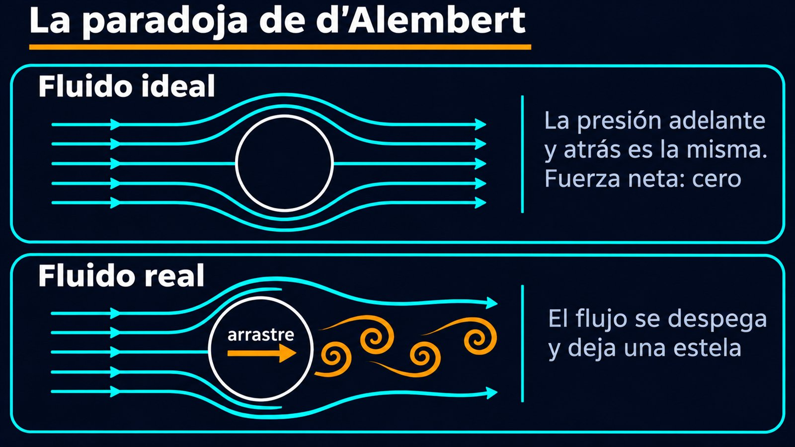

La teoría decía que un cuerpo no siente resistencia; la experiencia decía otra cosa
Sacá la mano por la ventanilla de un auto en movimiento: el aire la empuja hacia atrás con fuerza. Cualquiera sabe que un cuerpo que se mueve en un fluido siente resistencia. Sin embargo, durante más de un siglo, la teoría matemática de los fluidos ideales dijo exactamente lo contrario: que un cuerpo que avanza a velocidad constante en un fluido sin fricción no siente ninguna resistencia. Esa contradicción es la paradoja de d'Alembert.
David Tong, de la Universidad de Cambridge, la muestra con una esfera en una corriente de fluido ideal [1]. Con el flujo potencial alrededor de la esfera y el teorema de Bernoulli, se calcula la presión sobre su superficie [1]:
Lo extraño, dice Tong, es que la presión depende solo de sen²θ: es idéntica adelante y atrás de la esfera [1]. Las fuerzas de adelante y de atrás se cancelan, y la esfera no siente ningún empuje en la dirección de la corriente. Visto desde la esfera que se mueve, significa que avanza por el fluido sin ninguna resistencia [1]. Con un cilindro pasa lo mismo [1].
El espejo: en el flujo ideal, el dibujo de las líneas de corriente detrás del cuerpo es la imagen en un espejo del dibujo de adelante. El fluido se abre adelante y se vuelve a cerrar atrás exactamente igual, devolviéndole al cuerpo, atrás, el mismo empujón que le dio adelante. En el flujo real, el fluido se despega antes de cerrarse y deja una estela: el espejo se rompe.

La reconstrucción histórica de Grimberg, Pauls y Frisch muestra que la paradoja tuvo varios autores. Leonhard Euler en 1745, el propio d'Alembert en 1749 y Jean-Charles Borda en 1766 estuvieron muy cerca de formularla [2]. Pero fue d'Alembert, en 1768, el primero en reconocerla como tal, aunque solo para cuerpos simétricos de adelante hacia atrás [2]. Tong, que fecha el hallazgo en 1752, cita la conclusión de d'Alembert: la teoría da, al menos en varios casos, una resistencia estrictamente nula, «una paradoja singular que dejo para que la aclaren los geómetras del futuro» [1].
Los geómetras del futuro se tomaron su tiempo. Tong cuenta que el rompecabezas se volvió una vergüenza cuando los hermanos Wright volaron, en diciembre de 1903, sin que la teoría pudiera explicar bien ni la sustentación ni el arrastre [1]. Todavía en 1915, Lord Rayleigh escribía que buena parte de la hidrodinámica teórica estaba «fuera de contacto con la realidad» [1].
La salida llegó con Ludwig Prandtl. Según MacTutor, presentó su idea de la capa límite en agosto de 1904, en el Congreso Internacional de Matemáticos de Heidelberg [3]. Por pequeña que sea la viscosidad, cerca de la superficie del cuerpo hay una capa delgada donde no se puede ignorar. Tong explica qué pasa con ella detrás de un cuerpo redondeado: atrás la presión vuelve a subir, eso frena el flujo de la capa límite, y en algún punto la capa se despega del cuerpo y deja una estela [1]. En esa estela la presión es mucho más baja que adelante, y eso produce una fuerza de arrastre mucho mayor [1]. La simetría que anulaba la fuerza desaparece.
Lo que la teoría ideal sí hace bien: el flujo ideal no explica el arrastre, pero sí la sustentación. Tong muestra que si al flujo alrededor de un cilindro se le agrega circulación, la fuerza en la dirección de la corriente sigue siendo cero, pero aparece una fuerza perpendicular: la sustentación [1]. Esa parte de la teoría ideal funciona, y es la base de cómo vuela un ala, como se cuenta en sustentación y circulación.
La paradoja de d'Alembert es un ejemplo de lo que pasa cuando un modelo hermoso deja afuera un detalle que parece menor. Sin viscosidad, la presión es simétrica alrededor del cuerpo y no hay arrastre. Con viscosidad, por chica que sea, aparece la capa límite, el flujo se despega y deja una estela, y el arrastre vuelve. Hizo falta un siglo y medio, y los aviones de los Wright, para entenderlo.
Pregunta para la comunidad: Si la viscosidad del aire es tan chica, ¿por qué no se puede simplemente ignorar? Pensá qué pasa justo sobre la superficie del cuerpo, donde el fluido tiene que quedarse pegado a la pared.